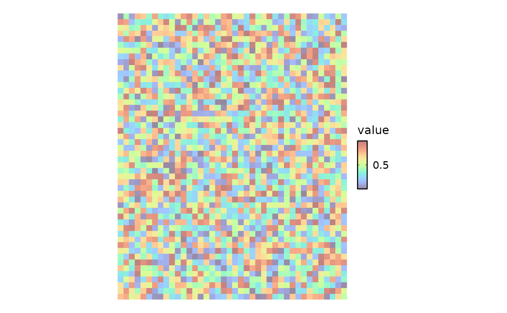
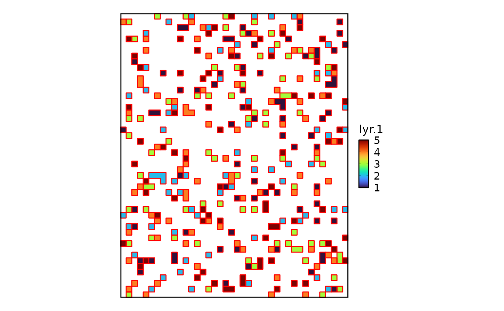
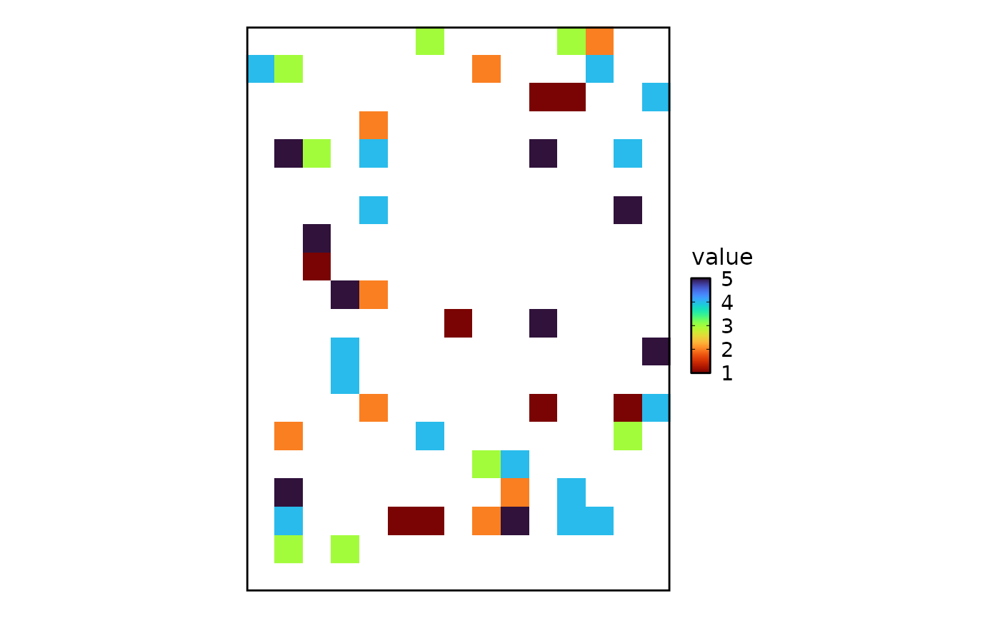
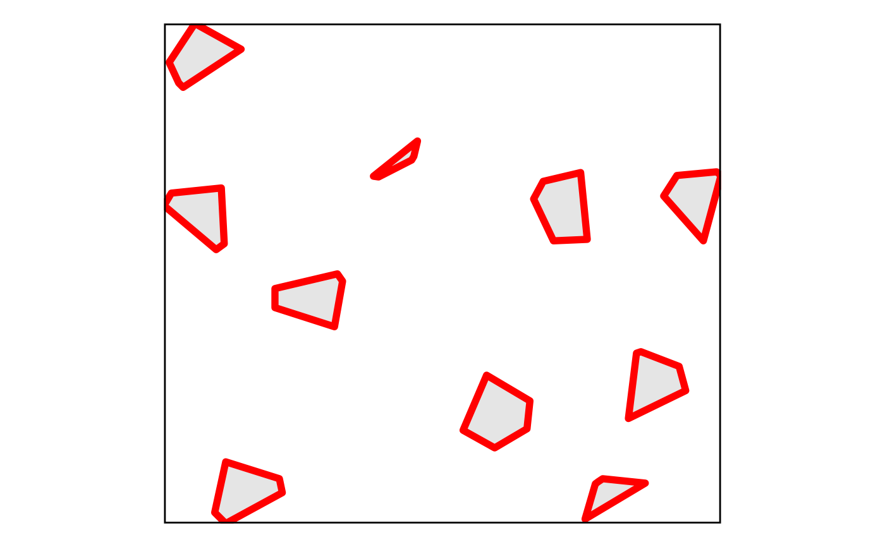
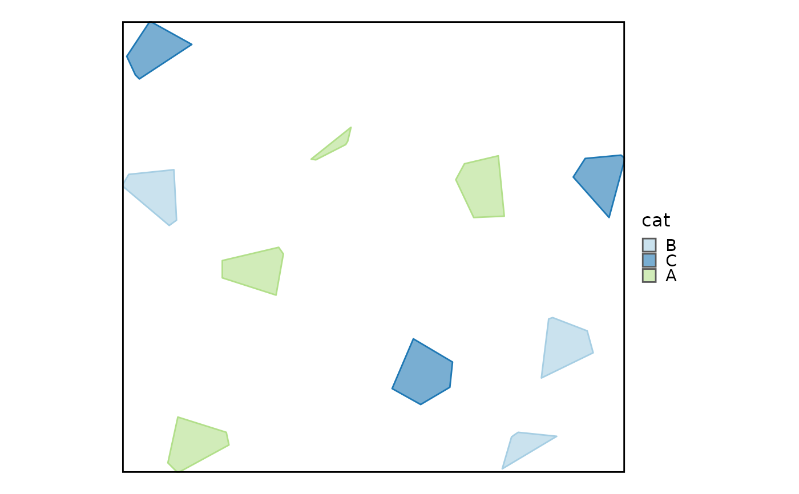
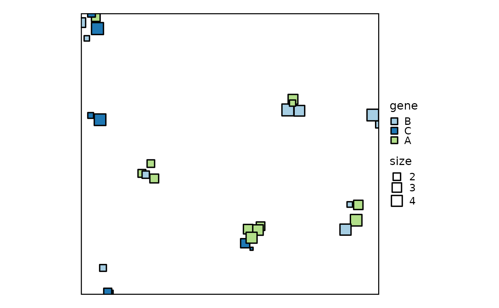
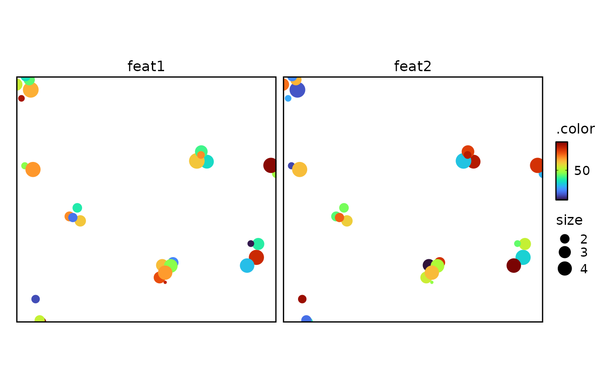
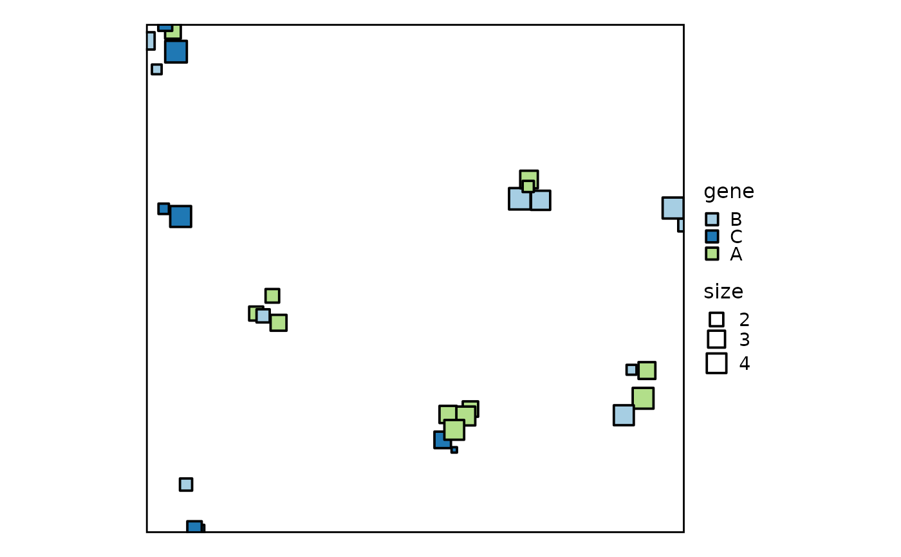
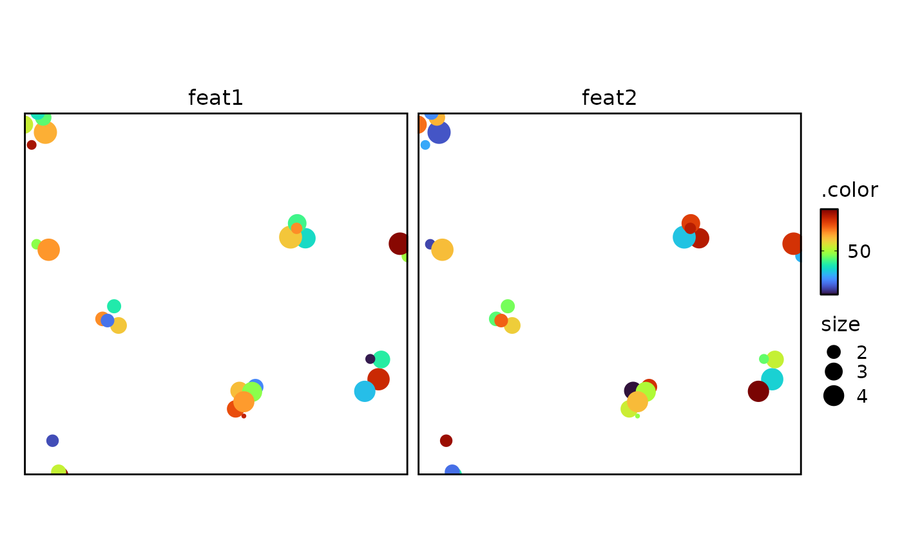

SpatialImagePlot: Plot a SpatRaster object as an image.SpatialMasksPlot: Plot a SpatRaster object as masks.SpatialShapesPlot: Plot a SpatVector object as shapes.SpatialPointsPlot: Plot a data.frame of points with spatial coordinates.
Usage
SpatialImagePlot(
data,
ext = NULL,
raster = NULL,
raster_dpi = NULL,
flip_y = TRUE,
palette = "turbo",
palcolor = NULL,
palette_reverse = FALSE,
alpha = 1,
fill_name = NULL,
return_layer = FALSE,
theme = "theme_this",
theme_args = list(),
legend.position = ifelse(return_layer, "none", "right"),
legend.direction = "vertical",
title = NULL,
subtitle = NULL,
xlab = NULL,
ylab = NULL,
seed = 8525,
...
)
SpatialMasksPlot(
data,
ext = NULL,
flip_y = TRUE,
add_border = TRUE,
border_color = "black",
border_size = 0.5,
border_alpha = 1,
palette = "turbo",
palcolor = NULL,
palette_reverse = FALSE,
alpha = 1,
fill_name = NULL,
return_layer = FALSE,
theme = "theme_this",
theme_args = list(),
legend.position = "right",
legend.direction = "vertical",
title = NULL,
subtitle = NULL,
xlab = NULL,
ylab = NULL,
seed = 8525,
...
)
SpatialShapesPlot(
data,
ext = NULL,
flip_y = TRUE,
fill_by = NULL,
border_color = "black",
border_size = 0.5,
border_alpha = 1,
palette = NULL,
palcolor = NULL,
palette_reverse = FALSE,
alpha = 1,
fill_name = NULL,
facet_scales = "fixed",
facet_nrow = NULL,
facet_ncol = NULL,
facet_byrow = TRUE,
return_layer = FALSE,
theme = "theme_this",
theme_args = list(),
legend.position = ifelse(return_layer, "none", "right"),
legend.direction = "vertical",
title = NULL,
subtitle = NULL,
xlab = NULL,
ylab = NULL,
seed = 8525,
...
)
SpatialPointsPlot(
data,
x = NULL,
y = NULL,
ext = NULL,
flip_y = TRUE,
color_by = NULL,
size_by = NULL,
fill_by = NULL,
palette = NULL,
palcolor = NULL,
palette_reverse = FALSE,
alpha = 1,
color_name = NULL,
size_name = NULL,
shape = 16,
border_color = "black",
border_size = 0.5,
border_alpha = 1,
raster = NULL,
raster_dpi = c(512, 512),
hex = FALSE,
hex_linewidth = 0.5,
hex_count = FALSE,
hex_bins = 50,
hex_binwidth = NULL,
facet_scales = "fixed",
facet_nrow = NULL,
facet_ncol = NULL,
facet_byrow = TRUE,
return_layer = FALSE,
theme = "theme_this",
theme_args = list(),
legend.position = ifelse(return_layer, "none", "right"),
legend.direction = "vertical",
title = NULL,
subtitle = NULL,
xlab = NULL,
ylab = NULL,
seed = 8525,
...
)Arguments
- data
A
SpatRasterorSpatVectorobject from theterrapackage, or a data.frame forSpatialPointsPlot.- ext
A numeric vector of length 4 specifying the extent as
c(xmin, xmax, ymin, ymax). Default is NULL.- raster
Whether to raster the plot. Default is NULL.
- raster_dpi
A numeric vector of the raster dpi. Default is c(512, 512).
- flip_y
Whether to flip the y-axis direction. Default is TRUE. This is useful for visualizing spatial data with the origin at the top left corner.
- palette
A character string specifying the palette to use. A named list or vector can be used to specify the palettes for different
split_byvalues.- palcolor
A character string specifying the color to use in the palette. A named list can be used to specify the colors for different
split_byvalues. If some values are missing, the values from the palette will be used (palcolor will be NULL for those values).- palette_reverse
Whether to reverse the color palette. Default is FALSE.
- alpha
A numeric value specifying the transparency of the plot.
- fill_name
A character string for the fill legend title.
- return_layer
Whether to return the layer or the plot. Default is FALSE.
- theme
A character string or a theme class (i.e. ggplot2::theme_classic) specifying the theme to use. Default is "theme_this".
- theme_args
A list of arguments to pass to the theme function.
- legend.position
A character string specifying the position of the legend. if
waiver(), for single groups, the legend will be "none", otherwise "right".- legend.direction
A character string specifying the direction of the legend.
- title
A character string specifying the title of the plot. A function can be used to generate the title based on the default title. This is useful when split_by is used and the title needs to be dynamic.
- subtitle
A character string specifying the subtitle of the plot.
- xlab
A character string specifying the x-axis label.
- ylab
A character string specifying the y-axis label.
- seed
The random seed to use. Default is 8525.
- ...
Additional arguments.
- add_border
Whether to add a border around the masks in
SpatialMasksPlot. Default is TRUE.- border_color
A character string of the border color. Default is "black".
- border_size
A numeric value of the border width. Default is 0.5.
- border_alpha
A numeric value of the border transparency. Default is 1.
- fill_by
A character string or vector specifying the column(s) to fill the shapes in
SpatialShapesPlot.- facet_scales
Whether to scale the axes of facets. Default is "fixed" Other options are "free", "free_x", "free_y". See
ggplot2::facet_wrap- facet_nrow
A numeric value specifying the number of rows in the facet. When facet_by is a single column and facet_wrap is used.
- facet_ncol
A numeric value specifying the number of columns in the facet. When facet_by is a single column and facet_wrap is used.
- facet_byrow
A logical value indicating whether to fill the plots by row. Default is TRUE.
- x
A character string specifying the column name of the data frame to plot for the x-axis.
- y
A character string specifying the column name of the data frame to plot for the y-axis.
- color_by
A character string specifying the column to color the points in
SpatialPointsPlot.- size_by
A character string specifying the column to size the points in
SpatialPointsPlot.- color_name
A character string for the color legend title in
SpatialPointsPlot.- size_name
A character string for the size legend title in
SpatialPointsPlot.- shape
A numeric value or character string specifying the shape of the points in
SpatialPointsPlot.- hex
Whether to use hex plot. Default is FALSE.
- hex_linewidth
A numeric value of the hex line width. Default is 0.5.
- hex_count
Whether to count the hex.
- hex_bins
A numeric value of the hex bins. Default is 50.
- hex_binwidth
A numeric value of the hex bin width. Default is NULL.
Examples
# \donttest{
set.seed(8525)
# --- SpatialImagePlot ---
# Generate a sample SpatRaster
r <- terra::rast(
nrows = 50, ncols = 40, vals = runif(2000),
xmin = 0, xmax = 40, ymin = 0, ymax = 50,
crs = ""
)
SpatialImagePlot(r)
SpatialImagePlot(r, raster = TRUE, raster_dpi = 20)
SpatialImagePlot(r, alpha = 0.5, theme = "theme_blank",
theme_args = list(add_coord = FALSE), fill_name = "value")

SpatialImagePlot(r, ext = c(0, 10, 0, 10), flip_y = FALSE, palette = "viridis")
# --- SpatialMasksPlot ---
m <- terra::rast(
nrows = 50, ncols = 40,
vals = sample(c(1:5, NA), 2000, replace = TRUE, prob = c(rep(0.04, 5), 0.8)),
xmin = 0, xmax = 40, ymin = 0, ymax = 50,
crs = ""
)
SpatialMasksPlot(m, border_color = "red")

SpatialMasksPlot(m, ext = c(0, 15, 0, 20), add_border = FALSE,
palette_reverse = TRUE, fill_name = "value")
#> Warning: Raster pixels are placed at uneven horizontal intervals and will be shifted
#> ℹ Consider using `geom_tile()` instead.

# --- SpatialShapesPlot ---
polygons <- data.frame(
id = paste0("poly_", 1:10),
cat = sample(LETTERS[1:3], 10, replace = TRUE),
feat1 = rnorm(10),
feat2 = rnorm(10),
geometry = c(
'POLYGON((64.6 75.3,66.0 70.5,66.4 70.2,67.0 69.8,72.8 70.4,64.6 75.3))',
'POLYGON((56.7 63.0,52.3 65.6,48.0 63.2,51.2 55.7,57.1 59.2,56.7 63.0))',
'POLYGON((9.9 16.5,9.3 15.9,8.0 13.1,11.5 7.8,17.8 11.3,9.9 16.5))',
'POLYGON((64.9 37.2,60.3 37.4,57.6 31.7,58.9 29.3,64.0 28.1,64.9 37.2))',
'POLYGON((30.5 49.1,22.4 46.5,22.4 43.9,30.9 41.9,31.6 42.9,30.5 49.1))',
'POLYGON((78.3 57.8,70.5 61.6,71.6 52.7,72.2 52.5,77.4 54.5,78.3 57.8))',
'POLYGON((41.8 23.8,41.3 25.9,41.0 26.4,36.5 28.7,35.8 28.6,41.8 23.8))',
'POLYGON((15.7 75.9,14.2 74.4,15.7 67.5,23.0 69.8,23.4 71.7,15.7 75.9))',
'POLYGON((80.7 37.4,75.3 31.3,77.1 28.5,82.5 28.0,83.1 28.5,80.7 37.4))',
'POLYGON((15.5 37.8,14.4 38.6,7.3 32.6,8.3 30.9,15.1 30.2,15.5 37.8))'
)
)
polygons <- terra::vect(polygons, crs = "EPSG:4326", geom = "geometry")
SpatialShapesPlot(polygons)
SpatialShapesPlot(polygons, ext = c(0, 20, 0, 20))
SpatialShapesPlot(polygons, border_color = "red", border_size = 2)
SpatialShapesPlot(polygons, fill_by = "cat", fill_name = "category")

# Let border color be determined by fill
SpatialShapesPlot(polygons, fill_by = "cat", alpha = 0.6, border_color = TRUE)
SpatialShapesPlot(polygons, fill_by = "feat1")

SpatialShapesPlot(polygons, fill_by = c("feat1", "feat2"), palette = "RdYlBu")
# --- SpatialPointsPlot ---
# create some random points in the above polygons
points <- data.frame(
id = paste0("point_", 1:30),
gene = sample(LETTERS[1:3], 30, replace = TRUE),
feat1 = runif(30, 0, 100),
feat2 = runif(30, 0, 100),
size = runif(30, 1, 5),
x = c(
61.6, 14.3, 12.7, 49.6, 74.9, 58.9, 13.9, 24.7, 16.9, 15.6,
72.4, 60.1, 75.4, 14.9, 80.3, 78.8, 16.7, 27.6, 48.9, 52.5,
12.9, 11.8, 50.4, 25.6, 10.4, 51.9, 73.4, 26.8, 50.4, 60.0
),
y = c(
32.1, 12.8, 33.2, 59.9, 57.8, 31.9, 10.1, 46.8, 75.3, 69.0,
60.0, 29.4, 54.2, 34.2, 35.3, 33.1, 74.7, 48.0, 63.2, 59.2,
9.2, 15.1, 64.5, 47.1, 11.4, 60.1, 54.1, 44.5, 61.9, 30.3
)
)
SpatialPointsPlot(points)
SpatialPointsPlot(points, color_by = "gene", size_by = "size", shape = 22,
border_size = 1)
 SpatialPointsPlot(points, raster = TRUE, raster_dpi = 30, color_by = "feat1")

SpatialPointsPlot(points, color_by = c("feat1", "feat2"), size_by = "size")
SpatialPointsPlot(points, color_by = "feat1", hex = TRUE)

# --- Use the `return_layer` argument to get the ggplot layer
ext = c(0, 40, 0, 50)
ggplot2::ggplot() +
SpatialImagePlot(r, return_layer = TRUE, alpha = 0.2, ext = ext) +
SpatialShapesPlot(polygons, return_layer = TRUE, ext = ext, fill_by = "white") +
SpatialPointsPlot(points, return_layer = TRUE, ext = ext, color_by = "feat1") +
theme_this() +
ggplot2::coord_sf(expand = 0) +
ggplot2::scale_y_continuous(labels = function(x) -x)
# }
SpatialPointsPlot(points, raster = TRUE, raster_dpi = 30, color_by = "feat1")

SpatialPointsPlot(points, color_by = c("feat1", "feat2"), size_by = "size")
SpatialPointsPlot(points, color_by = "feat1", hex = TRUE)

# --- Use the `return_layer` argument to get the ggplot layer
ext = c(0, 40, 0, 50)
ggplot2::ggplot() +
SpatialImagePlot(r, return_layer = TRUE, alpha = 0.2, ext = ext) +
SpatialShapesPlot(polygons, return_layer = TRUE, ext = ext, fill_by = "white") +
SpatialPointsPlot(points, return_layer = TRUE, ext = ext, color_by = "feat1") +
theme_this() +
ggplot2::coord_sf(expand = 0) +
ggplot2::scale_y_continuous(labels = function(x) -x)
# }